ZBrush UVs, Displacement and Substance Painter
UV Unwrapping
To Unwrap a model in ZBrush
- Set subdivision to lowest level
- Navigate to ZPlugin > UV Master > Work On Clone
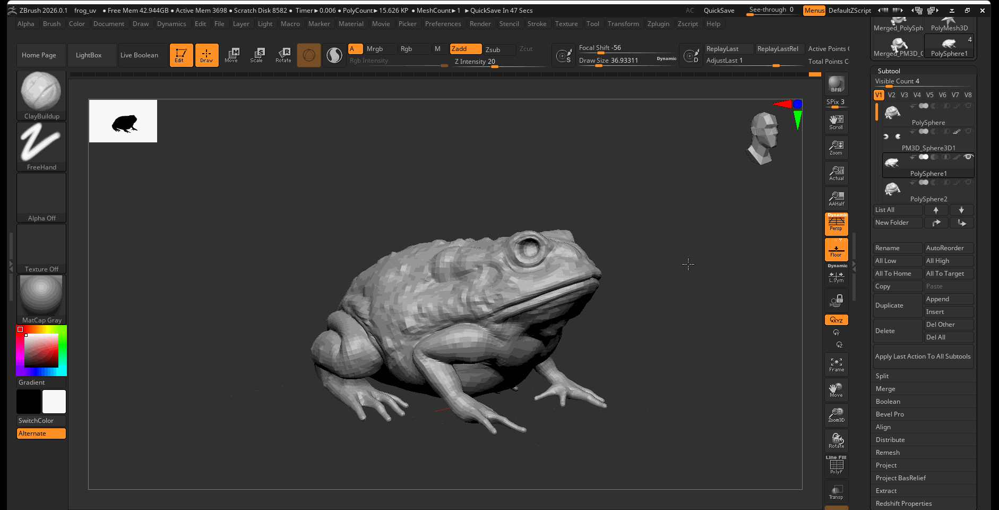
This will create a clone of your ZBrush sculpt to work on.
- Select Create Control Painting > Use the protect option to paint eras you want to protect from seams, use the attract option to paint areas for seams to be formed.
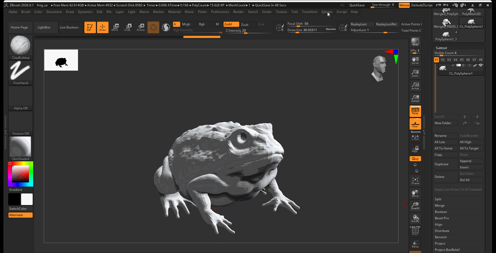

- Select Unwrap > Check Seams to see how the seams look.
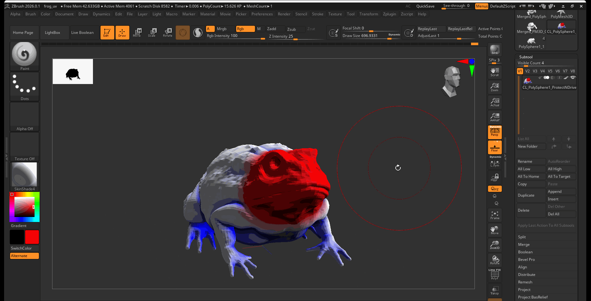
- If the seams are in areas that may be distracting, you can rework your protect and attract and unwrap your model again.
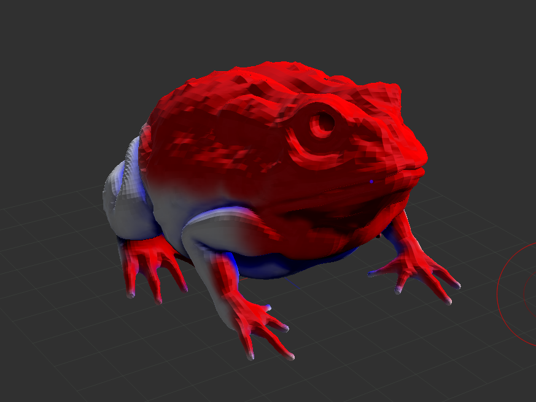
Check UVs
- You can check the UV layout by pressing Flatten and UnFlatten
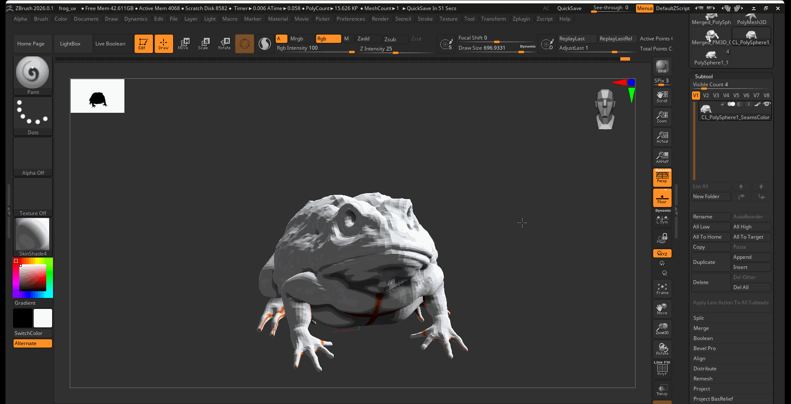
- You can also check your UVs in Maya after exporting your model from ZBrush
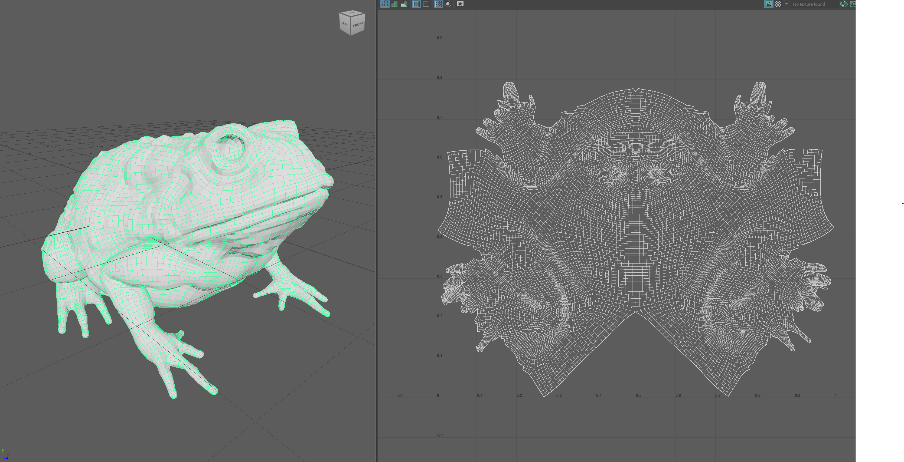
Transfer UVs
-
Select your copy model and select ZPlugin > UV Master > Copy UVs
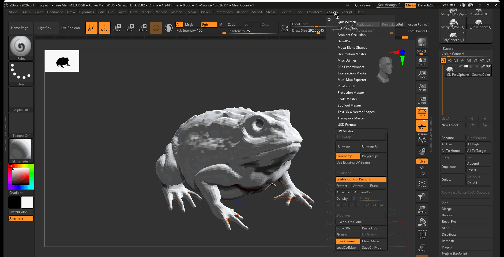
-
Navigate to your original model and select ZPlugin > UV Master > Paste UVs
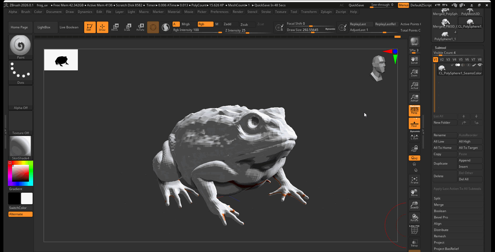
Create and use Displacement Maps
Displacement maps are texture maps that can be used to displace geometry while rendering. Unlike normal maps that create the illusion of detail, displacement maps take existing vertices and displace them based on gray scale data.
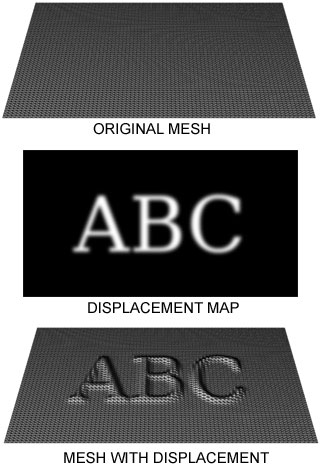
We can create a displacement in ZBrush by using the ZPlugin Multi Map Exporter
To create a displacement map:
- Navigate to ZPlugin > Multi Map Exporter
- Set Map Size to 4096
- Navigate to Export Options > Displacement Map > and turn on 32Bit and EXR
- Press Create All Maps > Save the map in the Source Image of your Maya Project
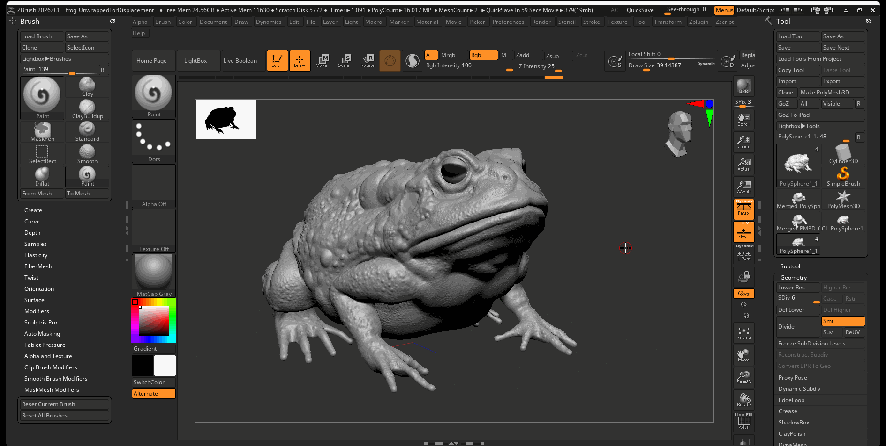
Displacement map example:
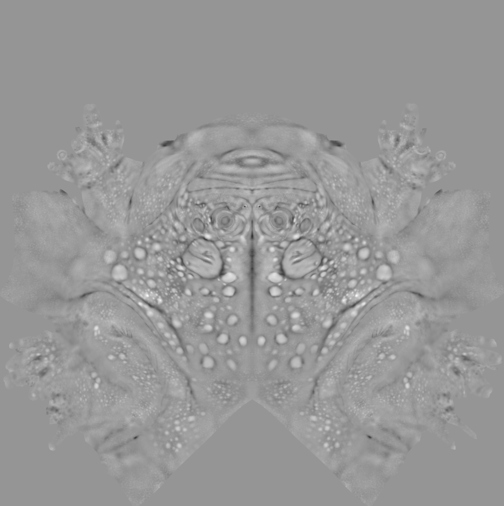
ZBrush to Substance Painter
We can use substance painter to bake normal maps and other utility texture maps from our Zbrush model. We can use our high poly model to provide image information to our low poly model.
- Export a version of your model at the lowest resolution and one version of your model with at least 4 levels of subdivision.
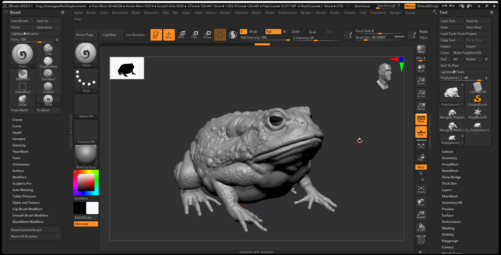
- Import your low resolution model into a substance painter.
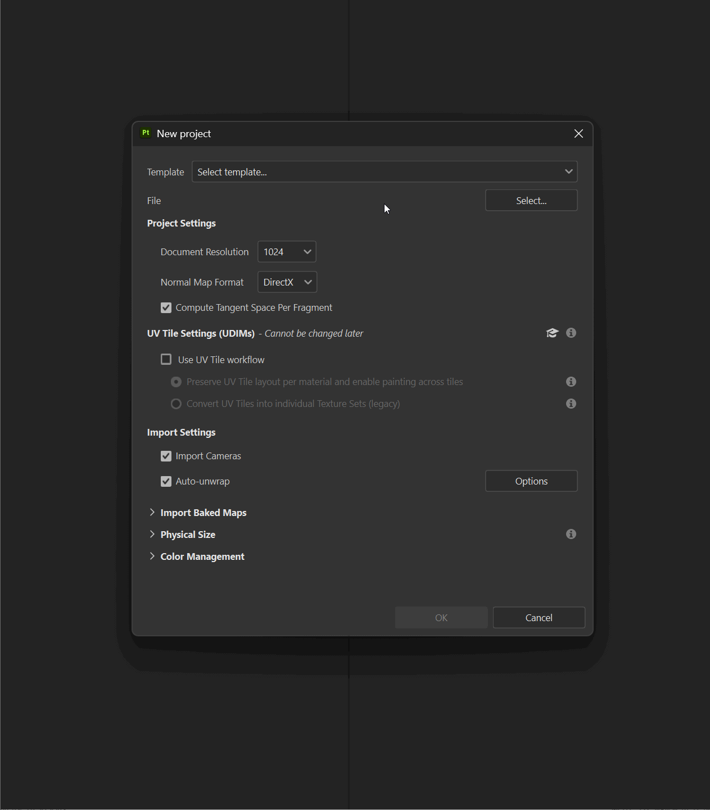
- In your Bake Mesh Map settings, provide the High Definition Meshes setting with your high poly model.
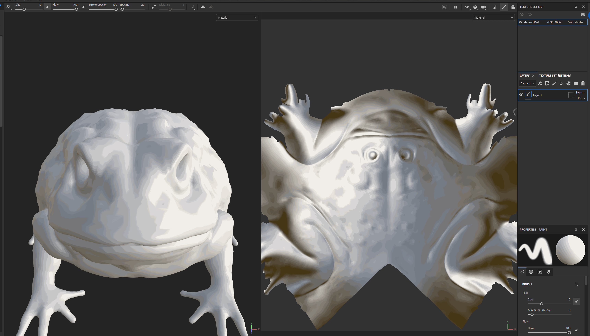
Importing Substance and Displacement Textures into Maya
To import substance painter textures into Maya:
- Use the Substance plugin to bring in your imported textures
- Replace the height map with the displacement map you exported from ZBrush.
- Apply this material to the Low Poly model you exported from ZBrush.
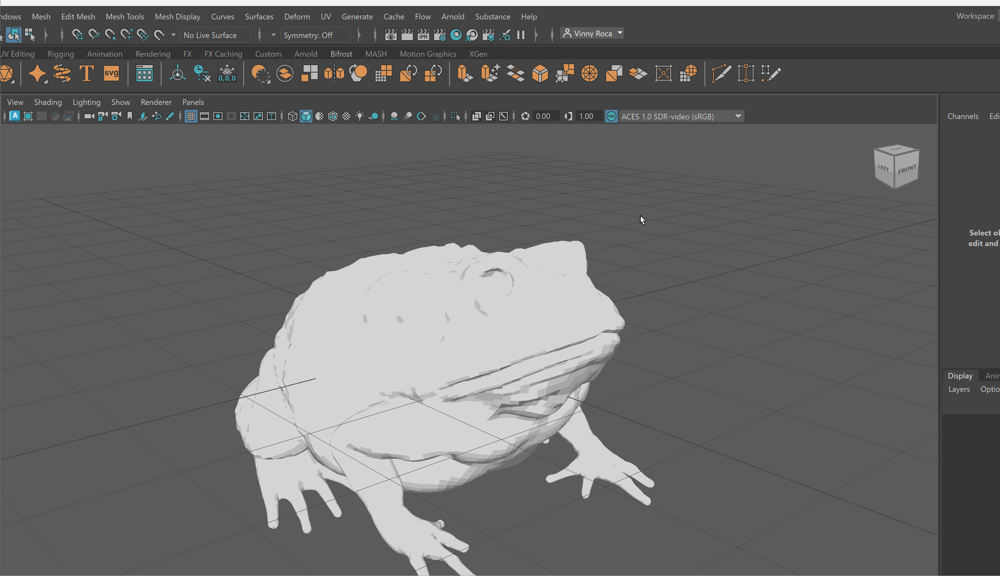
Displacement Controls in Maya
Level of displacement is controlled in Maya within the object shape settings. To control displacement, there is a two step process:
- In your object shape setting in the attribute editor navigate to Arnold > Subdivision
- Set Type to catClark and make sure Iterations are set to around 4. This will subdivide your model at run time allowing for more geometry to effectively use the displacement map.
- In Displacement Attributes, make sure Height is set to 1.0. This number might need to vary based on the scale of your object. This value controls the strength of your displacement map.
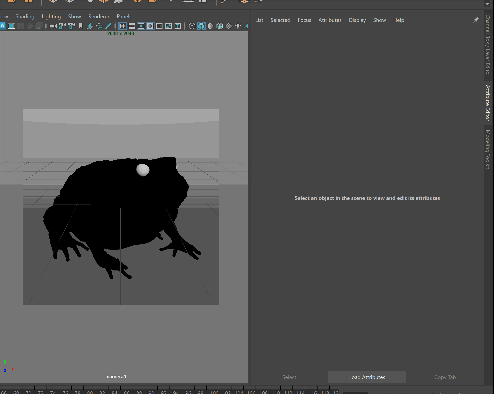
The first image below has a displacement height of 1 while the second has a displacement height of 10.
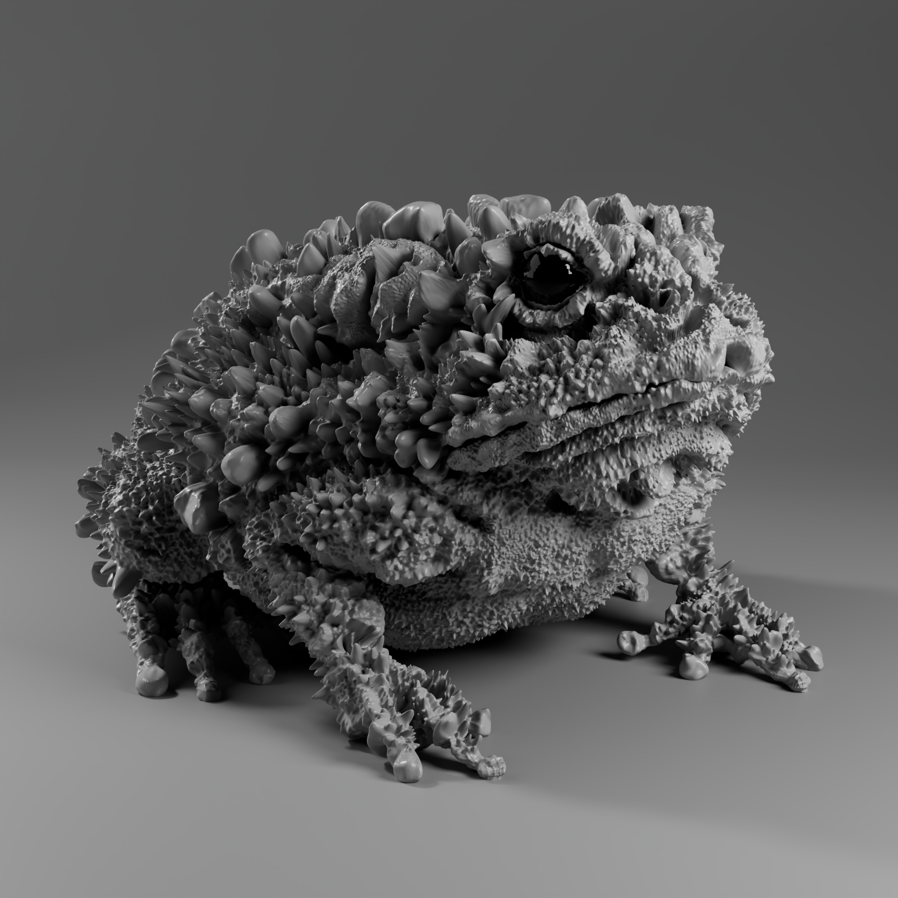